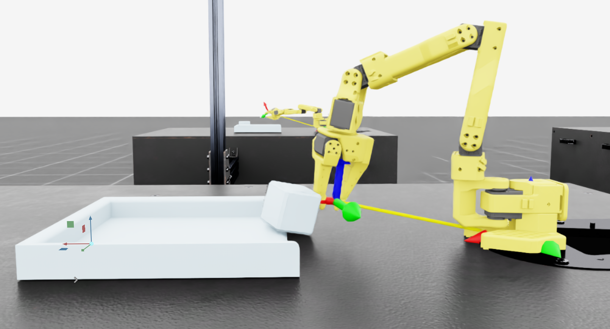
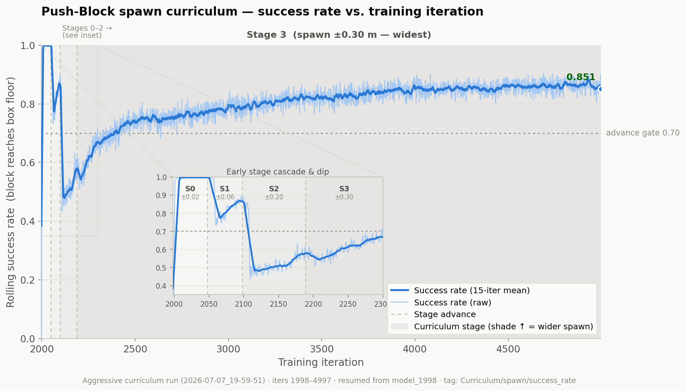

Work & Projects
Internships
Design Teams
Personal Projects
Python
Languages
C++
Languages
Java
Languages
OpenCV
Computer Vision
MediaPipe
Computer Vision
Git
Version Control
Claude Code
AI Tooling
Keyence Vision
Vision Systems
PLC Ladder Logic
Allen-Bradley
HMI Development
Industrial UI
AMR Integration
Robotics
SolidWorks
CAD
AutoCAD
Drawings
Toyota Boshoku
Co-opJan–May 2026
AMR Computer Vision System

Bird's-eye detection output

Live calibration interface
What
A real-time computer vision system that automates rack detection and decision-making for autonomous mobile robots in Toyota Boshoku's manufacturing plant. It takes a live RTSP camera feed, applies homography and distortion correction to get a consistent bird's-eye view of the workspace, then uses HSV colour segmentation with configurable detection regions to work out which racks are occupied.
How
Detection results are converted into structured boolean arrays and sent to Allen-Bradley PLCs over Ethernet/IP, where they directly trigger AMR actions. I built an interactive calibration interface with live tuning for colour thresholds, detection sensitivity, and geometric transformations, plus save/load so it can be redeployed quickly. A multithreaded camera pipeline eliminates frame latency and keeps the system stable running in production.
Impact
Replaced manual operator input entirely: the AMRs now make real-time decisions based on actual rack availability. In production it reliably handled over 100 rack moves per day, which took that job off operators and cut the production delays that came with it.
HMI Development

Servo history display

Screw station HMI panel
What
Human-machine interface displays for multiple machines and robotic systems across the production plant. The screens show real-time servo speed and torque data for sonic weld robots during clip installation and track total screws and clips installed. Operators can also selectively bypass vision-based defect detection for specific screws.
How
Built using FactoryTalk View Studio and Studio 5000. Ladder logic captures and stores real-time production and diagnostic data in the Allen-Bradley PLC, and structured tags and arrays carry it to the HMI. I laid out the screens so operators and maintenance staff can read system status at a glance instead of digging into raw PLC data.
Impact
Better visibility into robot performance made faults faster to diagnose and maintenance easier to schedule. Tracking tool usage means worn parts get swapped before they fail rather than after, cutting unexpected downtime. The operator bypasses removed unnecessary production stoppages while keeping quality checks intact.
uWaterloo Formula Electric
DrivelineSep 2025–Mar 2026
Push Bar Spacer Jig

SolidWorks model

3D printed jig

In-assembly context
What
A spacer jig designed to align push bar holes for accurate, repeatable drilling on the UWFE race car chassis.
How
Measured the necessary dimensions directly from the driveline SVN master assembly, modeled the spacer in SolidWorks to fit the push bar geometry, then 3D-printed the jig for immediate use.
Impact
Team members could drill accurately without measuring by hand each time, so setup got faster and hole placement stayed consistent across parts.
Motor Template Jig

GD&T drawing

AutoCAD drawing

SolidWorks model
What
A motor template jig to improve alignment and repeatability of chassis hole and insert manufacturing for the UWFE driveline.
How
Modeled the jig in SolidWorks using measurements taken from the SVN driveline master assembly. Drafted a full engineering drawing with GD&T specifications and had it validated by a senior team member for manufacturability. Water-jetted the aluminium base to dimension, then milled holes to ±0.1 mm tolerance.
Impact
Standardized hole alignment across driveline machining operations, so team members could work faster and more accurately.
Radiator CAD Model

Physical radiator

SolidWorks model (front)

SolidWorks model (back)
What
An accurate CAD replica of the physical cooling system radiator for integration into the UWFE driveline assembly model.
How
Measured all key radiator dimensions using calipers, then recreated the geometry in SolidWorks with matching form and mounting features. Committed the finished model to the team's TortoiseSVN master assembly.
Impact
The team used the model to verify spatial packaging and fitment in the full driveline assembly before fabrication, which closed out one of the missing pieces of the cooling system design.
Personal Projects
Side projects, experiments, and builds.
Hand Tracking Computer Vision Guitar

Note triggers with live chord diagram

Swipe gesture to switch chord groups

Pinch-controlled volume slider
What
A guitar you play in the air: it reads hand and finger movements from a webcam feed and turns them into musical input, in real time. The left hand selects chords based on finger positions; the right hand triggers individual notes. Visual overlays display chord diagrams and fingertip indicators in the live feed.
How
Built custom hand-tracking logic on top of MediaPipe, interpreting finger states by comparing landmark positions to determine which fingers are raised or pressed. Detected gestures map to chord and note audio files via Pygame. An event-based playback system only fires on new finger presses, so holding a position doesn't retrigger the same audio. Optimized frame processing to maintain sub-frame latency from a live camera feed.
Impact
This was my entry point into real-time computer vision, and it convinced me a standard webcam could drive a low-latency interactive system accurately. What I learned here about frame processing, gesture mapping, and keeping everything real-time fed directly into the AMR CV system at Toyota Boshoku.
Autonomous Checkers Robot

Initial concept

First functional prototype

Final design
What
An autonomous checkers-playing robot built to compete against a human player. It scans the board with optical and distance sensors, identifies piece locations, determines a legal move, and physically executes it with a motorized claw on an X-Y gantry. All of this had to fit within strict hardware and size constraints.
How
C++ firmware represents the board as a 2D array, handling piece detection, legal move generation, promotion logic, and game-over detection. The X-Y motion system positions the claw over target squares and the claw mechanism picks and places pieces. It took several prototypes to get right: stiffening the chassis, fixing jams, re-aligning the claw and sensors, and eventually modifying the checkers pieces themselves so they'd detect reliably.
Impact
The final robot reliably played complete games of checkers against a human. Everything had to work together: the mechanical design, the sensors, and the embedded software. More than anything it taught me how to iterate on a prototype and debug problems that could live anywhere between the hardware and the code.
Space Race

Gameplay
What
A 2D survival shooter built from scratch in Java using JavaFX. The player controls a spaceship, dodges randomly spawned asteroids, shoots aliens, and survives as long as possible. Includes a full menu flow, health tracking, enemy combat, collision handling, and a game over screen with persistent high-score statistics.
How
Object-oriented architecture with separate classes for each entity type: spaceship, aliens, asteroids, projectiles, health bar, and stat tracker. Real-time gameplay is driven by a JavaFX AnimationTimer loop handling movement, spawning, collision detection, and scoring. Smooth held-key movement uses a key-state map instead of single key events. Directional projectile motion is calculated from normalized velocity components toward mouse-click targets; enemy shots track the player. Stats persist between sessions via file I/O.
Impact
Built and shipped a complete, playable game, from the architecture through the gameplay loop to persistent state. It gave me a real feel for managing several interacting real-time systems and for keeping OOP design clean inside a tight game loop.
Watonomous
HumanoidMay 2026–Present
Sim-to-Real Reinforcement Learning Arm

Isaac Lab training scene

Curriculum success rate
What
Trained a reinforcement-learning policy in NVIDIA Isaac Lab for a SO-ARM101 robotic arm to push a block up a ramp and into an elevated container using contact only. The gripper was locked closed, so the policy could never grip or lift and had to solve the task through pushing dynamics alone. The project was built for eventual transfer to the physical SO-101 arm.
How
Designed reward shaping to encourage correct approach positioning and reward progress up the ramp, while penalizing any attempt to lift the block. Training ran in three stages, each building on the last:
| Run | Iterations | Spawn behavior | Video |
|---|---|---|---|
| Base | 0–1499 | Fixed default block spawn, no randomization | Watch video |
| Finetune (randomized) | 1500–1998 | Moderate xy+yaw randomization, fixed range for the whole run | Watch video |
| Curriculum | 1999–4997 | 4-stage performance-gated widening, spawn range widens after each success threshold is met |
Impact
The policy reliably completes the push task from varied starting positions and was exported to ONNX for sim-to-real deployment on the physical SO-101 arm. I owned the whole RL workflow for a contact-rich manipulation task: environment design, reward engineering, curriculum design, and the deployment export.